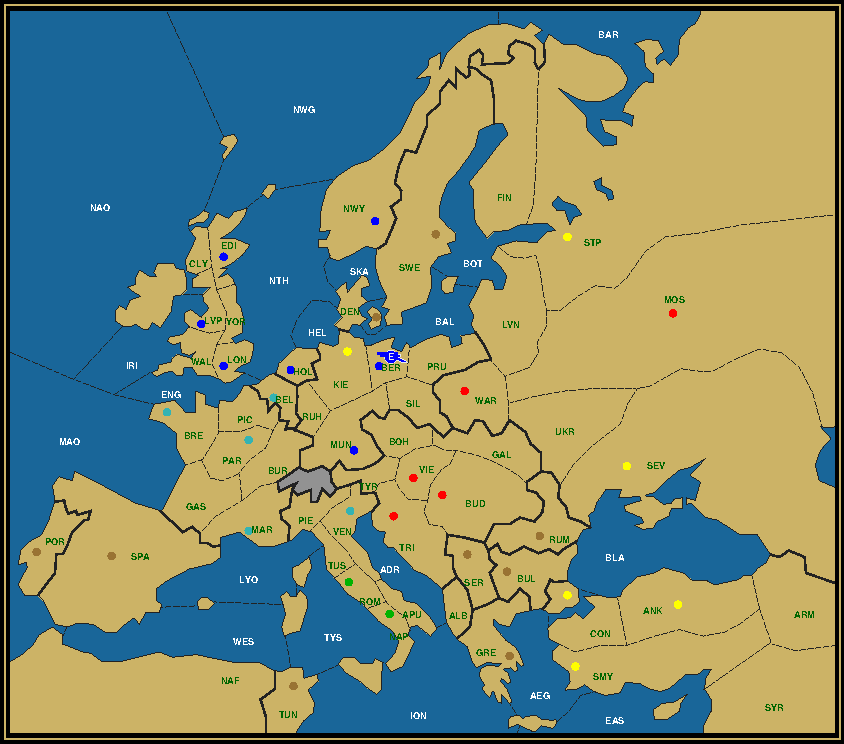

|
The room was empty now except for the two of us, but there was still a nice fire burning in the hearth. Sherlock Holmes went to the bar and poured us a drink. I gladly accepted mine. We took a sip and relaxed in our chairs.
"It was not my intention to be cruel to you," he said. "You're obviously in no state now to work out this puzzle."
"It has been quite an eventful evening," I admitted, happy to extract myself from any further intellectual exercises. "But you must tell me how you were able to instantly know how the game had played out, with Sir Malcolm collapsing on the floor as an extra distraction. Had Mr. Waltman from the Diplomacy in Kent magazine tipped you off with another challenge, as in the case of the first LMS game?"
"He did not. I only heard of a second game this morning, when Sir Malcolm mentioned it on his way out, unaware of any of its conditions except for the Baron's boast that it would be more spectacular than the first one."
Holmes took a sip of his drink, taxing me with a glimmer in his eyes. I was as ever his faithful audience, eager to hear another wondrous tale of how he had found clues where there were none, solving problems that had not even occurred.
"As I told you, I had the whole afternoon off. Having made myself some kind of an expert on Last Man Standing puzzles with my treatise on the subject for the Diplomacy in Kent magazine, I considered it a suitable challenge to predict the kind of game that the Baron had prepared."
He was referring to the at that time still unpublished series of articles for Douglas Waltman's rival magazine to the Zine, which still drew some of my ire. In these he demonstrated all the capitals army Liverpool could reach as the Last Man Standing under the same conditions as in the Baron's first game.
"Remember the conditions he had imposed on his Liverpool to Berlin game. Finish in four years with all powers still possessing at least one unit after two years and no neutral centers taken. If there's one condition to change, which one would it be?"
It was more of a rhetorical question, at least to him. "Try what may, it can't be done in three years, this much I knew. Reducing the number of powers early is hardly spectacular and risks disengaging prematurely part of the public that had been betting on those powers. But neutral centers are fair game. None taken restricts the number of places a unit can be on after the Fall turn. Take that condition away, better still, put it on its head, and the possibilities become quasi limitless."
"Well then, even you are not going to solve a problem with limitless options," I remarked.
"Indeed not. Unless you take the human factor into account. With all the information that I had, it only takes a few judicious assumptions to reduce the problem to a manageable level. Baron Hervé had his solution to the no-neutrals problem as a starting point. All he had to do -all I had to do- was to make small, incremental variations that gradually captured more and more neutral centers, while keeping the same basic game flow."
"But how could you be sure that this approach would lead to such a large capture of neutral centers?"
"There were a number of indications that this would be the case. First off, in the original solution there were just three units going into the final year. As you must be aware by now, the maximum number of units going into the final year is four. Allowing one extra unit in the final year translates in more extra units in the previous year and thus more positions to move them to. Furthermore, remember that there were two powers that got completely eliminated, Germany and Russia."
"Oh yes, the sniper countries."
"As you please. The more snipers there are in the early stages, the easier it is to pick off units that moved too far out to reach the destination. When trying to capture neutral centers, which are distributed fairly evenly around the board, this is an important factor. And finally, with neutral centers allowed to be captured, you can aim at landing all three non-sniper units -which we called raiders- on a supply center at the end of the third year."
"I see, Kiel is connected to Holland and Denmark, and then to Belgium and the rest of Scandinavia. But what advantage can be gotten from that?"
"If all those centers belonged to the sniper powers, capturing them allows to disband a maximum number of snipers. Or, in other words, allows for a maximum number of them to survive into the third year."
"Three centers captured in the Fall of 1903 means there can be four sniper units at the start of 1903, including the one that will still be there in 1904."
My curiosity piqued, I got up and stood next to the giant demonstration board. Without removing the country flag markers, I took the pieces one by one out of the box and set up the initial position for 1901. They were cast in iron and the size of a fist, richly decorated and quite realistic, but also heavy. The pieces were pushed around using a kind of roulette rake. I took it up and proceeded to execute the moves for the no-neutrals solution, which was still fresh on my mind.
"The English fleet moving to St. Petersburg could move through Norway instead of the Barents Sea in the Fall of 1901. That would net Norway for England. With Denmark blue I assume that you're moving the second fleet there."
"Ah, Watson, now you're reasoning from the end result. That won't do. If you really wish to understand the singular progression of the mind, you should put yourself in the same situation." And with that he cleared all flags from the board, much to my dismay. He motioned me to sit down and took the rake in his hand.
"Norway is a giveaway. As is actually Belgium, if you use fleet Brest to convoy the English army, allowing fleet London to move to Belgium. The logical next step is to transpose the events in France to the Lowlands, letting Germany take Belgium instead of Paris, England take Holland instead of Brest and convoying to Picardy."
"But if France doesn't lose any centers, it prevents the French fleet from disbanding."
Holmes shrugged. "Once you start taking extra centers, disbanding units in Winter will be a lesser used tactic, especially in the first year. The trick is to create an extra opportunity to dislodge a unit. One such occasion is Spring 1902, when the three armies in France were simply dancing around each other. In the present variation the armies and fleets are clustered closer together and on land. We can have the French army in Ruhr supporting the German army to Holland to take out the English fleet, then being dislodged in turn when the English army, now in Burgundy, supports the German army in Ruhr, while the French fleet takes Belgium."
"And if the German army then attacks the French fleet in Spring 1903 and moves out in Fall, we have the same endgame as in the original. Beautiful. But still only three neutrals."

Three Neutrals after Winter 1904
Click here for the final map or here for the complete history of this solution.
Holmes smiled. He was clearly enjoying this. "You tell me if I'm going too slow. We're coming to Denmark now, which you were going to capture with the fleet from London. Try now to make this work." And with that he handed the rake back to me.

|
Dr. Watson is called to the table again. A cue for you to step in his shoes. And if one is not enough, try Sweden as well. How far do you get?
|
...and when you're ready to continue with Watson's tale,
click here....
Moving fleet London back to the North Sea as in Spring 01, I observed that it could not both take Holland and Denmark at the same time. But if the fleet took the second center in 02, I did not know how to get rid of it in 03. "That shouldn't be an issue," said Holmes. "Remember that we can allow a fourth unit in 04, on condition that the fleet in the Baltic is of the same color as the final destination, Berlin. Swapping the German and Russian fleets around in 01 or letting A War capture a different German home center will suffice."
That made sense. I chose to convoy the Russian army to Kiel through the Baltic in 01 and let F Lon take Denmark in 02. I left it there during 03, but then noticed that there were two English units left in 04. I wanted to move A Lvp from Munich to Berlin and F Lon from Denmark to Kiel, dislodging the Turkish army there, but then the Fall would have seen F Lon trying to dislodge its own countryman in Berlin. The solution was simple enough though. "Let's make Munich Italian," I said, letting the German army attack Burgundy with support from the Italian already in Munich. After executing the final year, I remarked: "Interestingly, the Last Man Standing is now an English fleet. His Majesty will be pleased."
"I'm sure he will. All the more since St. Petersburg can now become English as well. All it takes is to convoy the Austrian army from Livonia to Sweden in Fall 02 to secure Sweden, and again to Kiel in Spring 03, while postponing the dislodgement of F Edi until this season."
"Oh, because then F Lon can support the Turk against the Austrian when the former gets convoyed to Kiel. Brilliant. That also adds a lot of convoys. Three in F01, one in F02, S03 and... F03. Didn't Sir Malcolm mention something about convoys in every season?"
"In every season in which there are fleets in the water, to be exact. We're indeed heading in the right direction. But let's take it one step at a time. Neutral centers first." My friend pointed the rake to the bottom left corner of the board. "Since you have a penchant for the navy, what about some Trafalgar action?"
"What, you're going to send the English fleet over to Spain?" I asked, ready to recite Admiral Nelson's famous last words.
"Not quite, we'll play the aftermath of the Battle. We'll let Napoleon conquer the Iberian peninsula. F Bre to Portugal and A Par to Spain."
|
|
The next hurdle. How can the Iberian centers be added to the solution? Try it out for yourself before continuing.
|
...and when you're ready to get on with the show,
click here....
I considered the implications. "That places them at a considerable distance from their original theater. The army can return in 02 to Burgundy and the fleet to the Channel. But neither can take Belgium. A Lvp must be convoyed by F Lon to Holland. Then move on to Belgium and hold there. That means there's one raider more at the start of 03. I don't quite see how it can be eliminated."
"Not unless you have one more sniper as well. Which is why Holland instead of Belgium should be made German and the English convoy should go to Denmark. Notice how that army can move on to Sweden and get dislodged there by the Austrian with support from the Russian fleet. That's one less to worry about."
"So you mean to take Holland only in 1903 using the French fleet. That's clever. Four snipers can do a lot of damage. But does it work really? In order to support the convoy from St. Pete to Kiel against the Austrian army, A Ber needs to move back to Berlin. Which is not adjacent to Bohemia. And he has only one season."
I scratched my head, but Sherlock remained unperturbed. "In that case convoy to Berlin instead and make Kiel the final destination. You then only have to move from Bohemia back to Silesia. At the same time, in order to let Kiel have the right owner, you must either move F Stp to the Baltic in 1901, or let A War capture a different German home center."
Moving A War to Ber gave the least trouble. We now had an Italian victor, but that was beside the point. The important thing was that we were getting closer. Even the final destination was starting to shift towards Holland. Four neutrals to go.
"None of the Balkan centers have been touched yet," I said. "It's time to stir up the Turkish hordes."
He shook his head, saying: "You can take one, but you won't get much further unless you resolve to take Tunis. This will lift the Italian burden to lose a center."
"And which Balkan center is that?"
"Rumania."
"But that's the only one that ultimately remained neutral! What a waste of time."
"Not quite. There's a fairly easy way to do it, and the final solution will imitate this approach to some extent."
"Well then, let's get to it. Tunis and Rumania."
|
|
You heard what Dr. Watson said. Orders from the Doctor. Tunis and Rumania. And be quick about it.
|
...and when you're ready to see it through,
click here....
With the board back in its original configuration, I immediately started executing 01. "F Nap to Tunis, A Con to Rumania. Do we still need to cover Sevastopol? Yes, we do. Let's send A Smy there, convoying A Mos to Armenia through the Black Sea to avoid running into each other. In 02 A Smy moves on to Moscow, while F Ank and A Con are cleaned up by the Russians. Wait, no, A Con moves from Rumania through the Ukraine to Moscow, while A Smy returns to Armenia, otherwise A Mos couldn't catch both an army and a fleet."
Holmes nodded. "You see, that part wasn't so difficult. But what about the West? I see you're still holding A Rom in place. A Rom and F Nap are each bringing up the rear on two of the routes that converge on Germany and the Lowlands. It would be better to maneuver another unit to the back by letting A Rom attack Venice. It doesn't matter if Italy keeps its home centers, now that we no longer need to disband F Nap. And to improve the mix-up even further, let's put A Vie in Tyrolia by dislodging A Ven there, supported from Munich."
"I see, you're trying to put the French army in last position," I remarked. "Now, how far can F Nap get? At the end of 1902 it can be in the Mid-Atlantic, in 1903 in North Sea. That's one step behind F Bre. But North Sea is not a center."
"Which is why you should aim for Belgium. And ensure that Belgium is already German. Let's send F Kie over there, since that fleet can at the same time help dislodge the French fleet."
"But do we not need it to be in the Baltic?" I asked.
"We'll build a new fleet instead." Seeing my look of surprise, he continued: "Builds are perfectly legal if the power has a sufficient number of centers. This is after all a game of Diplomacy in all respects, except for the goal. Germany captured two and lost one to Russia, so is entitled to a single build, F Kie."
In 1902 the first F Kie moved out to the Channel, tailgated by F Lon. A Mun moved to the Ruhr to help A Ber dislodge F Lon from Belgium, while at the same time making room for A Vie to capture Munich. With only 3 German centers left at the end of the year, the fleet in the Channel was removed. As A Mun was occupied supporting first A Mar to Munich and then A Con to Kiel, A Ber needed to retreat to Holland to support F Nap into Belgium against A Par. The final stage saw the other French army remove the remaining opposition with support from the German army in the Ruhr, starting in Berlin and arriving in Holland.
"Holland at last!" I exclaimed.
"And now for the Grand Finale," said Holmes, "the three Balkan centers of Serbia, Greece and Bulgaria."
|
|
Can you make it happen? In the same way as the Baron? Give it your best.
|
...and when you're ready for the big revelation,
click here....
All units were placed again in their starting position. "As is immediately obvious, the Balkans are mostly an affair between Austria and Turkey. The question is which unit to send where."
Like the Baron, the Detective was thoroughly enjoying giving a demonstration. I was sad that there were no others in attendance, but he didn't seem to mind.
"Greece is the driver here, being located the furthest from the goal."
"Bulgaria looks equally far, though," I objected.
"Not really, because you can convoy from Bulgaria to Sevastopol and make it follow the same route as we did with Rumania."
"That's the missing Spring 02 convoy!", I exclaimed. "Convoys in every season in which there's a fleet on the water. Of course! But then the Russians can only sweep one Turk in 02. Are you dislodging one in the Fall of 01 in Armenia then?"
It was something that I had wondered about before, but he waved my suggestion away. "No, we still need to take Sevastopol, with the fleet, and therefore cannot put two units on Armenia. And the fleet is also the only unit that needs to be dislodged, because A Con, by moving deeper into the Balkans, will be on a different path to Holland, one that leads through the center of the map."
He sketched out that second path with the rake, starting in Greece in a near straight line to Kiel before bending to Holland. "It takes exactly 6 turns or 3 game years to move from Greece to Holland. Whoever moves there, will be the Last Man Standing. Notice the places where that army lands every Fall: Trieste, Munich, each a supply center."
"Let me get this straight," I said. "If Munich is taken in 1903, then Berlin must be captured a year earlier. The Austrian in Sweden still gets convoyed to Kiel in Spring, with the Turk from St. Petersburg dislodging him in Fall. As such the army in Munich can only be Austrian."
"Right," he said, "Now, you will agree that in 1901 it's better for Russia to capture Munich and Sweden and Germany to take Trieste. That way we can build two more German units and keep A War in play. And as we're having A Mun come over to Trieste, let it eliminate the fleet there with assistance from A Rom, while A Ven sidesteps to land in Tyrolia, on its way to Berlin. Did we forget anyone? Oh yes, A Mar comes up to Ruhr and we build an army in Kiel and a fleet in Berlin. Now watch."
All across the board units got dislodged, many of them, like A Mar and A Rom, by a combination of two snipers. As a result there was only a single unit left south of Munich after the Winter of 1902, the lone Austrian army in Trieste, that had taken back its own home center. Germany still had snipers in Belgium and the Ruhr, ready to strike at the remaining French army in Burgundy. With the studied routine of a seasoned croupier he executed the 1903 moves, until only four units were left: an Italian fleet in Belgium, a German army in the Ruhr, a Turkish one in Kiel and the remaining Austrian in Munich. The final moves were a no-brainer.
"Eleven neutral centers," I said admiringly, "what a haul! I can imagine how that must have surprised all in attendance who had placed a wager. And to leave Rumania out. The audacity! And there's no way this can't be improved upon?"
"Not as far as I know. Let me explain. But, before I do that, we'd do well to light that fire again. I think you have enough patients suffering a cold as it is, without adding the both of us."
I agreed. The fire in the grand fireplace that had kept us company the whole evening, had smoldered and was about to go extinct. There was a pile of logs in a rack nearby and a stack of old newspapers to start the fire. While Sherlock dispersed the cinders to make room for a new fire stack, I took off the newspaper on top. My eye fell on a large caption: "West Thrace at all costs! proclaims Greek prime minister." In the picture, taken at a peace conference, was a familiar figure.
"That's Baron Hervé, if I'm not mistaken. Yes, it says here: 'During discussions of the indemnities to be paid by Bulgaria, one of the defeated nations in the past World War, Baron Hervé Van Rompuy-Leterme asked the Greek PM Venizelos whether he would settle for money or land. Notwithstanding the costs of the brewing war with Turkey, the PM was adamant: West Thrace should become Greek.'"
"A very strategical decision," commented my friend without looking up from stacking the logs in the hearth. "West Thrace, as you may know, is what is marked on the Diplomacy map as the southern coast of Bulgaria. Greece started the war against Turkey with only the city of Smyrna as a foothold on the Turkish mainland. All their soldiers would have to be convoyed through the Aegean. Greece only has a small fleet. Any boat required for protection would slow down the convoy operation. But if the whole coastline is Greek, they don't need any protection."
"So West Thrace was to shut Bulgaria out of the conflict. Too bad Greece and Constantinople are not adjacent on the Diplomacy map. It might have helped in taking the twelfth neutral center."
Sherlock suddenly stopped building his pile. He looked up at me. "That's it, Watson, a foothold!"
"What, how? But Greece is not even a Power?!"
"Not Greece. Russia! Russia needs a foothold! Give me a match."
With a dramatic gesture he lighted the pile. Flames jumped up high as the paper fragments were consumed, but settled down when they started to burn down the logs. Against that background he once again returned the board to its starting position.
|
|
A complete solution with all neutral centers captured. Is it possible? Can you beat the Baron?
|
...and when you're ready for the final act,
click here....
He rubbed his chin and looked at me as if he was going to confess a cardinal sin. "My mistake had been to assume that Russia should be completely eliminated, just like Germany. But in fact only one power needs to lose all its centers in order to facilitate a Last Man Standing, when that last remaining unit captures the last center off the supporting unit, forcing the latter to disband during Winter. Let that be Germany."
He had already recovered his composure. I smiled, adding: "In other words, Russia can take a center and keep it until the end. But which one?"
"Russia has used Armenia as its basis of operation so far, as that's the only coast bordering the Black Sea without a supply center. But as the Turkish line of advance shifted towards the Balkans, it makes sense to shift that basis along. And what better spot than to establish that foothold in Bulgaria? It's a neutral center and it allows to trap both the Turkish and the Austrian fleets, which are the two units that pose the most problems in this area, because they are the least mobile."
"Convoy of A Mos to Bulgaria, F Tri to Greece, F Ank to Constantinople, swipe left, swipe right, both fleets gone," I declared, as he indicated the moves. "Yes, indeed, very effective."
"Not only that, with Greece taken care of, we start one step closer to Holland, as it's now Serbia that's closing the row. On the down side we have at least one more raider to deal with after 1902, the Russian fleet or army in the North. Let's see..."
He paused for a moment, his brain making thousands of calculations simultaneously. "Ok, we'll leave the Russian northern fleet in and guide it to the Baltic. F Kie should come up to the Gulf of Bothnia. Should she take Sweden first? There's no downside to that, so let's just do that. The two German armies take the Lowlands. Now the Italians. Can A Ven take Serbia?... No, it would clash with F Nap in the final year. Send it to Munich? Well, why not. The two Germans should be able to take it out together with A Par. Turkish armies to Serbia and Sevastopol, Austrian to Warsaw and Rumania. A War stays out of any center. The rest moves as before. That's 1901. Russia one down, Germany two up. Remove A War, build a fleet in Kiel and an army in Berlin."
His rake was all over the board. I could barely follow the action, but it was a wonderful sight to see.
"In 1902 A Vie again gets convoyed to Sweden to dislodge A Lvp there. The second F Kie heads to the North Sea, while F Lon moves to the Channel to help take out F Bre in the Atlantic. In the Ruhr A Par gets dislodged by the Germans in Belgium and Holland, while A Ven moves to Burgundy to be dislodged in turn by A Mar moving up from Spain. A Con and A Rom move up to Tyrolia and Munich. Convoy the second A Ber to Livonia to support A Bud to Moscow against A Smy. Sweden lost, so remove the German army in Holland."
"Why did you leave the Russian fleet in the Baltic?" I asked. "Wouldn't it be better to have a German fleet there for the convoy to Germany, since the Russians are no longer snipers?"
"There will be no convoy. We have two units more left on the board than in the Baron's game, the English fleet in the Channel and the German army in Livonia, which took over sniper duties from the Russian fleet in the Baltic. A convoy is too slow, which, if you think about it, is something the Baron might never have realized. It's better to use the two German units to directly eliminate the two raiders in Russia. Just like the Russians did in the Black Sea."
What followed next, was the most hectic 1903 I had ever seen. The German fleet in the Gulf of Bothnia supported the German army in Livonia to St. Petersburg and back to Livonia, the other fleet in the North Sea supported the Italian fleet to the Channel and Belgium, while the army in the Ruhr first supported the Turkish army to Munich on its way to Berlin and then the Austrian army from Denmark to Kiel, where the Russian fleet had landed.
Removing all German units, except the one in the Ruhr, the game was again down to four units. Inexorably the game drew to its conclusion, which saw the Turkish army from Constantinople as the Last Man Standing in Holland. I had seen history being made in front of my eyes, and it had been exhilarating.
"Woof." A log in the hearth broke in two, its blackened heart consumed by flames. We looked up and grinned.
"One more before we go?" he asked and poured me another drink. We toasted on his victory. Once again the ace detective had outdone the evil master brain. The world felt safer already.
Not satisfied with the Turkish victory? We prepared five more boards with survivors from each of the other nations. Except Germany of course. After all, they lost the War. See how many you can reconstruct. Solutions in the next issue's LMS article.
— Dr John H. Watson
If you wish to e-mail feedback on this article to the author,
and clicking on the envelope above does not work for you, feel free
to use the "Dear
DP..." mail interface.
|